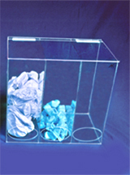

Keeps all disposables in one place. Each compartment has its own dispenser opening with radius edges for a smooth finish. Made of 1/4" clear Acrylic. 20"Wx18"Hx12"D
| CT-1477 THREE COMPARTMENT JUNIOR ECONOMICAL DISPENSER | |||
|  |
Keep all disposable items in one place. Openings feature a smooth radius edge so there is no potential for the end used to cut their hands. Wall mount or free standing. Made of 1/8" clear high impact PETG. 15-3/4"Wx14"Hx9-1/4"D |
||
| CT-1479 THREE COMPARTMENT ALL-PURPOSE DISPENSER | |||
|
Keeps all disposables in one place. Each compartment has its own dispenser opening with radius edges for a smooth finish. Made of 1/4" clear Acrylic. 20"Wx18"Hx12"D |
||
| CT-1401 HAND SPECIFIC BULK GLOVE BIN | |||
|
Hold bulk gloves in one convenient location. Separate left from right. Made of 1/4" clear acrylic. 17"Wx7"Hx13"D |
|||
| CT-777- FOUR COMPARTMENT GLOVE DISPENSER – UNIVERSAL | |||
|
Great for all industries. Accommodates all sizes of boxed, packaged or loose gloves. Wall mount or free standing. Made of 1/8" acrylic. 25-3/4"Wx11"Hx4"D |
|||
| CT-JN3-B THREE COMPARTMENT MULTI PURPOSE DISPENSER | |||
|
Holds all disposables in one location. Wall mount or free standing. Made of 1/4" clear acrylic and white ABS. 30"Wx30"Hx10"D |
|||
| CT-1485 FROCK DISPENSER - TWO COMPARTMENTS | |||
|
Holds all apparel in one location. Wall mount or free standing. Made of 1/4" clear acrylic and white ABS.. 22"Wx30"Hx15-1/2"D |
|||